Accurate Harmonics Measurement by Sampler - Part 1
Akinori Maeda, Verigy
Paper-ID: 128902 June 2011
Background
The Total Harmonic Distortion (THD) is one of the major frequency domain parameters for verifying dynamic linearity characteristics of devices like Analog to Digital Converters (ADC), Digital to Analog Converters (DAC), Amplifiers and so on. The dynamic linearity characteristics of devices are varied by the output frequency. And the evaluated results at the low frequencies do not show the characteristics at the high frequencies. Therefore, the THD must be measured at the actual operating frequencies.
The measurement instrument must have two important characteristics to evaluate the harmonic distortion performance of devices. One is the low harmonic distortion characteristics, and another is the wide input bandwidth. The measurement instrument should not generate the harmonic distortion of the input signal by itself. The harmonic distortion characteristics of the measurement instrument should be at least 6dB better than the expected harmonic distortion. For example, if the expected harmonic distortion is -70 dBc, the harmonic distortion generated by the measurement instrument should be better than -76 dBc. The measurement error at this condition is less than 1 dB.
The frequency of the Nth order harmonic distortion is N times of the input signal frequency. Measuring the correct harmonic distortion, the input bandwidth of the measurement instrument should wide enough to cover the frequency of harmonic distortions. For example, if the input signal is 100 MHz and the 7th order harmonic distortion is measured, the input bandwidth of the measurement instrument must be more than 700 MHz.
As described above, the measurement instrument to evaluate the harmonic distortion needs to have the low harmonic distortion and the wide bandwidth characteristics. In general, it is difficult to realize both characteristics in one instrument. This paper introduces the measurement conditions and the method to measure the correct harmonic distortions by the Sampler based on experiments.
Digitizer and Sampler
In general, a Spectrum Analyzer is the popular instrument to measure the harmonic distortions at bench. But for device manufacturing tests, the measurement speed of the Spectrum Analyzer is too slow to test the harmonic distortion performance of Device Under Test (DUT). Instead of the Spectrum Analyzer, a Digitizer is often used at this device manufacturing test. The analog output signals from the DUT are sampled by the Digitizer, and using Fast Fourier Transform (FFT), the sampled waveform is transformed to the frequency domain waveform. And then the THD is calculated from this frequency domain waveform. Computation performance of the recent workstation is very high and 1024 points FFT can be calculated less than 1 ms. The measurement speed including FFT calculation is fast enough for the device manufacturing tests.
Digitizer
Figure 1 shows the simple block diagram of a Digitizer. Input signal is sampled by the ADC after passing through the anti-aliasing filter. Sampled data is stored in the waveform memory block and DSP processing is performed to this sampled data. In general, Digitizer needs to have the anti-aliasing filter to conform the Nyquist theory. This means that sampling frequency of the ADC must be more than two times of the cut off frequency of the anti-aliasing filter.
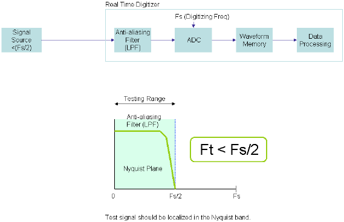
Figure 1: Simplified Digitizer Block Diagram [1]
The input bandwidth is limited by the anti-aliasing filter. This anti-aliasing filter is required when the input signal is unknown or noise performance is evaluated. Because the harmonic distortions are known signals, this means that the frequencies of all harmonic distortions are known, the anti-aliasing filter is not required. For harmonic distortion measurement, we can bypass the anti-aliasing filter and we can use the full input bandwidth of the ADC. But in the actual Digitizer, the buffer amplifier exists between the filter and the ADC, and it limits the input bandwidth. Even if the signal can go directly to the input of the ADC, the input bandwidth of the ADC is not so wide. Probably the bandwidth is up to a few 100MHz. When you evaluate the 7th order harmonic distortion, the maximum frequency of input signal is less than 50MHz for the correct measurement.
On the other hand, Digitizer has good harmonic distortion performance. For example, the THD performance of the Verigy VHF Digitizer, E9722B MBAV8 of V93000 SOC Test System, is -75 dBc @ 10 MHz. Therefore, less than -70 dBc THD can be evaluated.
Therefore, when you evaluate harmonic distortions up to a few 10 MHz, Digitizer is the right measurement instrument.
Sampler
Figure 2 shows the typical block diagram of a Sampler. At the input of the Sampler, there is a sampling head or a track-and-hold block exists. The input bandwidth of the Sampler is decided by the performance of this sampling head, which has usually several GHz bandwidth.
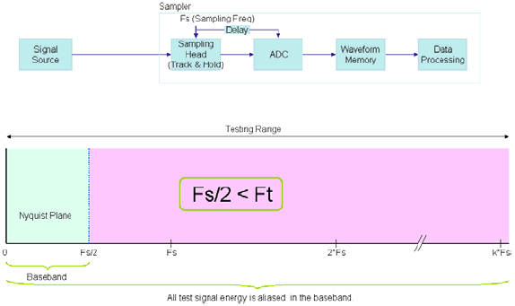
Figure 2: Simplified Sampler Block Diagram [1]
The operation of the Sampler is almost same as the Digitizer. Because the Sampler measures folded frequency components by the aliasing as shown in Figure 3, the input signal must be known. Otherwise, you can not reconstruct the correct input signal from the sampled data. Because the harmonic distortions are known signals, the Sampler can be used for harmonic distortion evaluation. We can measure the harmonic distortion up to several 100MHz because the input bandwidth of the Sampler is over GHz.
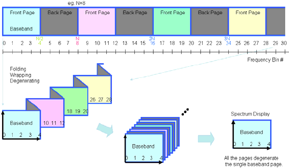
Figure 3: Sampler Measures Aliasing Components [1]
But, the harmonic distortion performance of the Sampler is not good. The THD performance of the Verigy E9726A 6GHz Sampler, for example, is -60 dBc @ 100 MHz. The major usage of the Sampler is wave shape evaluation and -60 dBc THD performance is enough for this purpose. But for the harmonic distortion evaluation, it can only evaluate down to -55 dBc harmonic distortions, and this performance of the Sampler is not enough for the usual harmonic distortion measurements.
Harmonic Distortion Measurement by Sampler
As described in the previous section, the Sampler is not a good measurement instrument for the harmonic distortion due to the poor harmonic distortion characteristics. But very wide input bandwidth of the Sampler is wonderful for the harmonic distortion measurement. If we can find the conditions of measurement or the method of measurement to increase the harmonic distortion performance of the Sampler, it becomes a superior instrument for the harmonic distortion measurement.
To increase harmonic distortion performance of the Sampler, attenuated measurement method is used. The major cause of the bad harmonic distortion performance is the non-linear characteristic of the Sampler. But, even if the linearity at Full Scale is bad, the linearity in small area which is a part of Full Scale is better than that of the Full Scale.
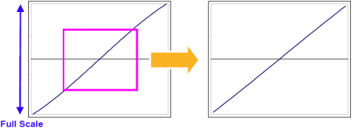
Figure 4: Concept of Attenuated Measurement
The left graph of Figure 4 shows the example linearity of the Sampler. This linearity is not so good and this probably generates large harmonic distortions. But if only a small area is used to measure the input signal, the effective linearity is better than that of the Full Scale as shown in the right graph in Figure 4. It generates less harmonic distortions and the Sampler can measures lower harmonic distortions. This method was experimentally evaluated.
Measurement Setup of Sampler
Before describing the experimental results, it is better to explain the measurement setup. The results of experiments were varied by this measurement setup, and knowing details of the measurement setup helps to understand the results of experiments correctly.
There are three measurement setups; they are "Normal Setup", "One Period Setup" and "Limited Sample Frequency Setup".
"Normal Setup" is the normal sampling setup and the relationship of the sampling frequency and the signal frequency is as follows.
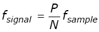
Where ‘N' is the number of data and ‘P' is the number of periods in data. Usually, it is better to use the higher sampling frequency. You can adjust the sampling frequency by selecting ‘P' value. For example, if the maximum sampling frequency of the Sampler is 100 MHz, the signal frequency is 10 MHz and ‘N' is 1024, ‘P' should be 103 and the sampling frequency of Sampler is 99.4174757...MHz.
The number of period in data at "One Period Setup" is one. Using "Inter Discard" setting, you can adjust the sampling frequency.
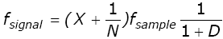
Where ‘N' is the number of data, ‘D' is the number of "Inter Discard" and ‘X' is the arbitral natural integer number. For example, if the range of sampling frequency of the Sampler is 90 MHz to 100 MHz, the signal frequency is 10 MHz and ‘N' is 1024, ‘D' should be 9 and ‘X' should be 1. The sampling frequency of the Sampler at this condition is 99.90243902...MHz. In general, ‘X' is 1 when the sampling frequency is higher than the signal frequency. If the sampling frequency is lower than the signal frequency, ‘X' value should be more than 1.
"Limited Sample Frequency Setup" is unique and the sampling frequency is in the range from 2/3 to 1 of the signal frequency, and you can select the number of periods in sampled data.
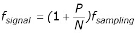
For example, if the signal frequency is 10MHz, ‘N' is 1024 and you want to measure more than 10 periods in sampled data, ‘P' should be 11 and the sampling frequency is 9.893719806...MHz.
Experiment Configuration
Several experiments were performed to find the best condition for the correct harmonics distortion measurement. In these experiments, the E9726A 6 GHz Sampler and the VHF AWG of the E9722B MBAV8 in the V93000 SOC Test System were used. The output of AWG is measured by the Sampler through the LPF and the attenuator. The single ended connection is used because the usage of the single ended connection is probably more than that of the differential connection in actual applications, and it is easier to get the single ended LPFs and the attenuators.
The purpose of using the LPF is to reduce the harmonic distortions of the AWG output. The waveform at the output of the LPF is clean sine waveform and this makes the evaluation of harmonic distortion performance of the Sampler be correct. The attenuator was used to reduce the amplitude of the sine waveform into the Sampler without changing the harmonics distortion characteristics. This AWG itself has the attenuators inside, but if the inside attenuators of the AWG are used, it may change the harmonic distortion characteristics. Therefore, the external attenuators are used in these experiments.
Figure 5 shows the photos of the connection between the AWG and the Sampler. In these photos, the attenuator was not shown.
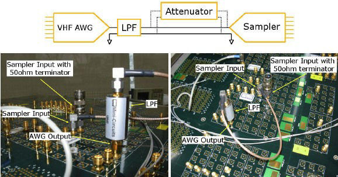
Figure 5: Actual Connection between AWG and Sampler
Harmonics Performance of AWG
At first, the harmonic distortion performance of the AWG was measured by the Spectrum Analyzer. This result is the reference data and is compared to the measured results by the Sampler.
The output frequency of the AWG was about 40MHz and the sampling frequency of the AWG was 500 MHz. The number of data was 16384 and the number of periods in this data was 1309. Therefore the actual output frequency of the AWG was:
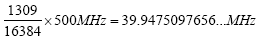
The output amplitude of the AWG was set to 0.7 V peak and it was reduced about 2 dB by the LPF which cut off frequency is 50 MHz. Therefore, the actual amplitude at input of the Spectrum Analyzer was about 0.55 V peak (about 4.8 dBm). The Spectrum Analyzer used for this measurement was the Agilent Technologies E4440A spectrum analyzer.
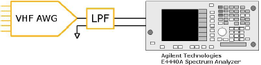
Figure 6: AWG output measured by spectrum analyzer
Figure 7 shows measurement results.
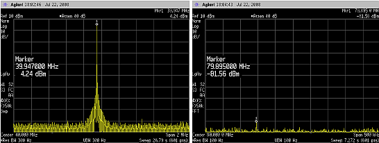
Figure 7: The spectrum of the AWG output
The 3rd harmonic distortion was too small to measure correctly. The Noise level of the Spectrum Analyzer was higher than that of the 3rd harmonic distortion. From this measurement, characteristics of the AWG are:
- Fundamental: 4.24 dBm (0.515 V peak, -5.76 dBV)
- 2nd Harmonic Distortion: -81.56 dBm (-85.8 dBc)
- 3rd Harmonic Distortion: < -90 dBm (< -95 dBc)
Best Measurement Condition of Sampler
To find the best condition of the measurement of the harmonic distortion by the Sampler, two parameters of measurement conditions were focused. One is the sampling frequency of Sampler and another is the number of periods in data. For the sampling frequency, measurements were performed at the sampling frequencies from 20 MHz to 110 MHz in 10 MHz step. For the number of periods in data, 1, 3, 11, 31, 101, 301, 1001, 3001 and 10001 periods are selected. The number of data is fixed to 16384. Table 1 shows the summary of the measurement conditions.
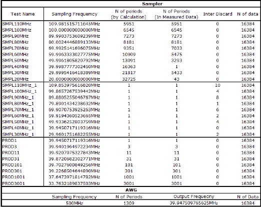
Table 1: Measurement Conditions
From the Test Name "SMPL110MHz" to the Test Name "SMPL20MHz", the measurement setup is "Normal Setup", and these tests focus the sampling frequency. From the Test Name "SMPL110MHz_1" to the Test Name "SMPL30MHz_1", the measurement setup is "One Period Setup", and these tests also focus the sampling frequency but one period is in data using inter discard. From the Test Name "PROD1" to the Test Name "PROD10001", the measurement setup is "Limited Sample Frequency Setup", and these tests focus the number of periods in data.
As shown in the previous section, the output amplitude of the AWG through the LPF was 0.55 V peak. The 1.2 V input range of the Sampler was used for these measurements.
Measured Results
Table 2 shows measurement results of this experiment. Figure 8 (a) shows the fundamental amplitude, and Figure 8 (b) shows the 2nd and 3rd harmonic distortions.
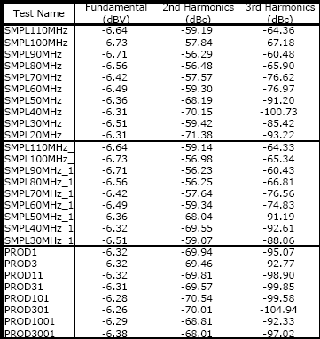
Table 2: Measurement results by Sampler
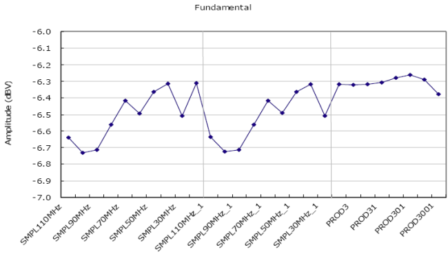
Figure 8 (a): Measured Fundamental Amplitude by Sampler
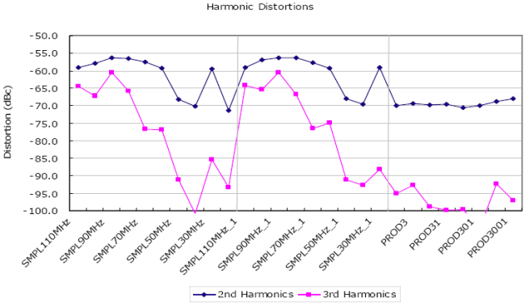
Figure 8 (b): Measured 2nd and 3rd Harmonics by Sampler
From these results, it is clear that the measured amplitudes vary by the measurement conditions. We focused two parameters, the sampling frequency and the number of period in data. Figure 9 shows the fundamental amplitude, the 2nd and the 3rd harmonic distortions varying the sampling frequency. The left figure of Figure 9 shows that the fundamental amplitudes at about 40 MHz are the maximum values, and the right figure of Figure 9 shows that the harmonic distortions at about 40 MHz are the lowest values. It seems that this sampling frequency condition should be the good measurement condition. This 40 MHz is the frequency of the input signal; therefore the sampling frequency should be close to the frequency of the input signal.
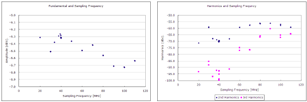
Figure 9: Amplitude and Sampling Frequency
Figure 10 shows the fundamental amplitude, the 2nd and the 3rd harmonic distortions varying the number of period in data. It shows that the measured amplitudes are varied by the number of period in data. From the left figure in Figure 10, the number of periods in data less than 1000 is good condition to measure. And the right figure in Figure 10 shows that data more than 10000 periods is higher harmonic distortions. Figure 11 shows that the same characteristic that is shown in Figure 10, but it contains only the data that the sampling frequency of the Sampler is close to the frequency of the input signal.
From these experimental data, the good measurement condition is that the number of periods is less than 5% of the number of data. The number of periods 1000 is about 6% of the number of data, 16384.
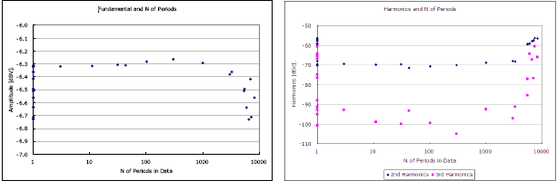
Figure 10: Amplitude and Number of Periods in Data
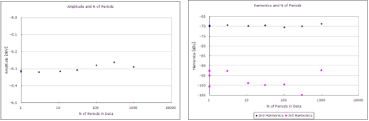
Figure 11: Amplitude and Number of Periods in Data at 40 MHz Sampling
Summary
From the measurement results shown in above, the best conditions to measure the harmonic distortion by the Sampler are:
- The sampling frequency is close to the input signal frequency
- The number of periods in data is less than 5% of the number of data
The Part 2 will describe the attenuated measurement method and its performances.